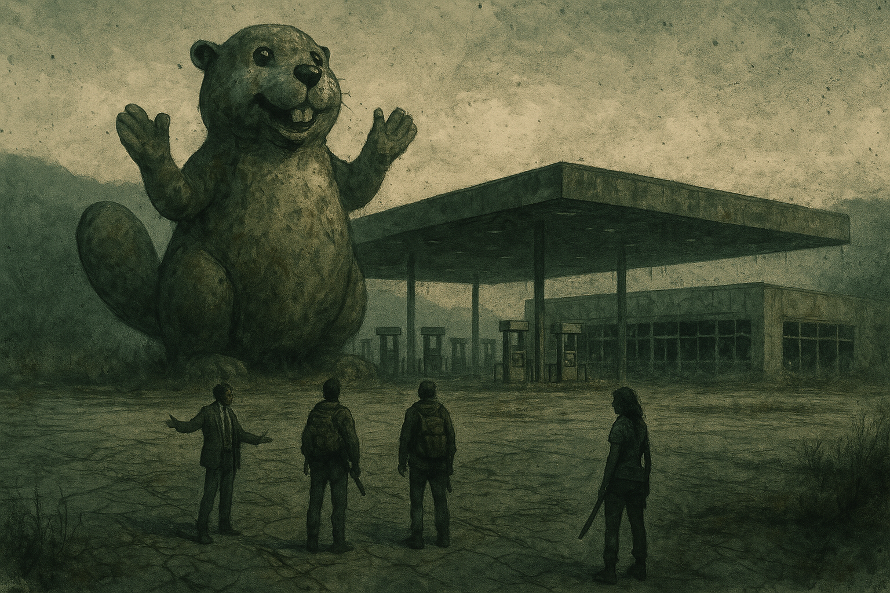

Nine in the Hollow¶
Session zero · 2026-08-30
Overview¶
Before a single die was rolled in anger, the table decided what everyone in these mountains believes: that the herds here climb, that a walker was once seen to pause before attacking a child, that the landmark you navigate by is a haunted school bus called the Old Yeller, and that a man calling himself the Watchman is still broadcasting conspiracies from somewhere out past the dial. Four survivors were built, four Anchors were chosen, and out of three possible homes the group took the cabin at the end of the washed-out logging road.
Nine people now live in a hunting cabin rated for far fewer.
Key Events¶
The Unsetting Questions¶
Each player rolled once, and the answers became canon:
- The herd here climbs. People have seen them in trees, coming up the sides of the mountains the way bears do — over the hillside before you know they're there. This single answer quietly undid the group's entire reason for choosing high ground.
- One paused before attacking a child. No explanation offered. Nobody liked it. It stayed.
- The Old Yeller. A school bus whose driver had a heart attack behind the wheel and turned with a full load of kids aboard. Some say it's haunted. The name was arrived at by way of a groan-worthy pun that the table immediately and unanimously adopted. See the Old Yeller.
- The Watchman. A conspiracy broadcaster named after the graphic novel he took too seriously — chemicals in the water, fluoride, all of it. The group specifically ruled that the broadcasts are not a loop: they change each time, so he's still alive. And one day he might go quiet. See the Watchman.
Choosing a Home¶
Three havens were on the table: the Last Stop (an unfinished Buc-ee's), the Ark (a grounded houseboat in a cove), and the Hollow (a hunting cabin up a logging road).
The Buc-ee's was the one everybody wanted. It was also the one that would kill them — fifty pumps, a fifteen-foot fiberglass mascot visible for miles, more doors than anyone can watch, and a full propane cage out back. The group talked itself out of it inside a minute and then spent the rest of the session mourning it.
They took the Hollow, and placed it in a sector near Soddy-Daisy — river access, natural resources, not quite on top of Chattanooga.
Then came the twist that reframed the whole group: the Hollow is Johnathan Banks' family cabin, his father's or grandfather's. He was a rich, snarky punk with a place he barely used, and everyone else there is a straggler he took in against his better judgment.
Four Survivors¶
- Johnathan Banks — Broker. Wall Street; ran insider trades for mobsters and hopes they're all dead. Carries no weapon, two sets of scales, and letters of introduction to three other havens. Drive: "I just gotta ring the bell."
- Ashley "Ash" Fairfax — Nobody. College dropout and burnout who was delivering a pizza when the world ended, got caught in a herd, and ran into the woods. Issue: doesn't care if she lives. Drive: "Keeps going anyway."
- Dr. Charles "Chuck" Greenbriar — Scientist. A biologist who really wanted to be a cryptozoologist and now believes the walkers prove he was right all along. Drive: "I'm not crazy."
- Clara "CJ" James — Homemaker. A pilates-and-martial-arts soccer mom with no family left and a number she's trying to run up. Agility 5, the highest stat at the table. Issue: Bloodthirsty.
Anchors¶
Five people were already living at the Hollow, and the survivors chose who they'd hold onto:
- Banks took Sister Ruth Okafor — and the story behind it is the ugliest thing established all session. He met her at the retirement home, one of the havens he holds a letter for, and talked her into abandoning her patients: "Just read these people their last rites and then come help us."
- Chuck took Dale Pruitt, the moonshiner who sheltered him before all this — "Dale sees things when he's at the bottom of a bottle. He feeds my delusions."
- CJ took Birdie Coyle, the former park ranger, over a shared love of nature and growing things — the softest thing established about the group's most lethal member, and the only bond formed at the Hollow rather than carried into it.
- Ash took nobody — she picked the Wallflower talent, making the whole group her anchor, on the stated logic that "I don't get as sad if one of them dies."
That leaves Tucker Vance and Marcus Webb unclaimed — the mechanic at a haven no vehicle can reach, and the fifteen-year-old who's desperate to be taken seriously.
How They Know Each Other¶
- Banks and CJ were neighbors before — two wealthy households on the same street. He took her with him. It's the oldest bond in the group.
- Chuck and Dale came in together, out of the woods, after being driven from Dale's cabin. Chuck had originally come to Chattanooga for the aquarium.
- Ash is pure happenstance — she ran into the cabin the way she runs into everything. The GM named her the one everybody knows least.
Memorable Moments¶
- King Buc-ee. Banks' player campaigning to run an unfinished travel plaza as a theocracy: "I'm gonna be King Buc-ee. And I'll spread the gospel of the beaver." Overruled on the grounds of near-certain death, and never let go of.
- Zombie bears. The climbing-herd answer took roughly ten seconds to escalate from "they come up the hillsides like bears do" to a walker riding a bear.
- Two sets of scales. Banks rolled the one gear item he didn't want — a set of merchant's scales — and then rolled it again. His justification: "In case one of them's off. I like to check my work." He ended the session with no weapon and two sets of scales.
- Bigfoot got COVID. Chuck's origin theory for the outbreak, delivered straight-faced and immediately reinforced by the rest of the table, who realized the funnier move was to agree with him. "We're just all feeding your delusions." — "Because nobody's got the heart to tell me I'm crazy." — "Yeah. Because you have a gun and a hammer."
- Walkers on walkers. The group's mental image of the retirement-home haven: survivors barricading themselves with mobility walkers, and the other kind of walker outside.
- "I'm gonna do my best to make y'all wanna kill me but not kill me." Banks' player, stating his design goals for the campaign out loud.
- The recording anxiety. Ten minutes in, the GM realized he hadn't written down a single Unsetting Answer: "I didn't write any of those down, so I'm hoping that thing is still recording." It was.
Open Threads¶
- The herds climb. The Hollow's defense rating assumes the terrain protects it. The terrain does not protect it. Nobody has connected these two facts out loud yet.
- Banks' three letters. The retirement home is confirmed as one. Banks names a second; the GM names the third. Whatever the third is, they haven't seen it coming.
- Sister Ruth's patients. She left a building full of dying people because a stock trader asked her to. That bill has not been presented.
- The Watchman may go silent. The group built in the possibility deliberately.
- Something is still in there. One walker paused before a child. The Hollow has a fifteen-year-old in it.
- Nobody anchored Tucker or Marcus. The man who fixes things and the kid who wants to matter are both unattached.
- The root cellar is nearly bare and there are nine mouths. Winter is the clock.
- PC-to-PC anchors were deferred to a later session.
Next Session¶
The GM has the first session sketched out. Weapon stats and remaining gear details still to be filled in on the sheets.
The Scene¶

You could see it from the ridge, which was the first thing wrong with it. Fifty pumps under a canopy the size of a hangar, a storefront with its plate glass blown out into a glitter of safety cubes across the apron, and out front — still standing, still waving, five years into the end of the world — a fifteen-foot fiberglass beaver with a grin like a man who has never once been told no. The wind came across the lot and moved nothing except the weeds coming up through the asphalt. Banks stopped walking about forty yards out and just looked at it, and something happened to his face that none of the others had seen there before.
"There's jerky in there," he said. "There is dry storage. There is a gift shop the size of my first apartment building and it is full of things people used to drive four hours out of their way to buy." He turned around, walking backward, arms open, and for a moment he wasn't a man in a ruined suit at the end of a dead highway; he was working a room. "You put nine people in a cabin and you get nine people's problems in one room. You put nine people in there and you've got a town. I'm not asking to be in charge. I'm saying somebody has to be, and I'm saying I'd be good at it." Somewhere behind him the beaver kept waving. "I'd spread the gospel of the beaver," he said, and he almost had them.
CJ didn't answer. She had gone quiet the way she went quiet, and she was walking the front of the building, and she was counting. Storefront: four ways in, and that was just what she could see from here. Loading dock around the side. The fuel islands, open on every face, no wall between them and the treeline. Behind the building, a steel cage stacked to the top with propane cylinders that nobody had gotten around to dealing with because nobody had ever needed to. She came back and stood next to Banks and looked at it with him for a while, and when she finally spoke it wasn't unkind. "We'd die here," she said. "All of us. Fast." And Banks, who could talk anybody into anything, and knew exactly what it cost him not to, put his hands in his pockets and looked up at that enormous, patient, grinning face one more time, and said: "Yeah." They walked back to the treeline before the light went. Nobody talked about it again, and everybody thought about it for the rest of the night.